2022 National 5 Biology - Paper 2 questions
Source: Scottish Qualifications Authority (SQA) / Qualifications Scotland. This is a StemInteract HTML companion, not an official HTML edition. Selectable text is supplied alongside original page images. Use the images or original PDF for equations, powers, fractions, vector notation, tables and diagrams; text extraction cannot fully preserve mathematical layout.
Jump to a question
PDF page 1
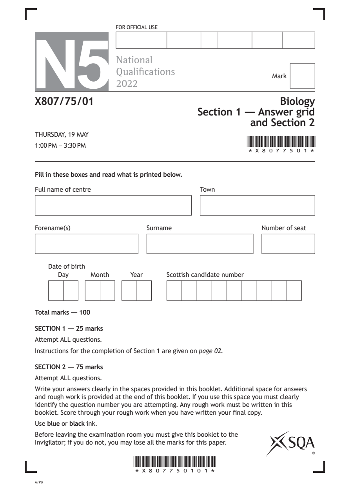
Selectable page text
FOR OFFICIAL USE
N5
National
Qualications
Mark
2022
X807/75/01 Biology
Section 1 — Answer grid
and Section 2
THURSDAY, 19 MAY
1:00 PM – 3:30 PM
*X8077501*
Fill in these boxes and read what is printed below.
Full name of centre Town
Forename(s) Surname Number of seat
Date of birth
Day Month Year Scottish candidate number
Total marks — 100
SECTION 1 — 25 marks
Attempt ALL questions.
Instructions for the completion of Section 1 are given on page 02.
SECTION 2 — 75 marks
Attempt ALL questions.
Write your answers clearly in the spaces provided in this booklet. Additional space for answers
and rough work is provided at the end of this booklet. If you use this space you must clearly
identify the question number you are attempting. Any rough work must be written in this
booklet. Score through your rough work when you have written your final copy.
Use blue or black ink.
Before leaving the examination room you must give this booklet to the
Invigilator; if you do not, you may lose all the marks for this paper.
©
*X807750101*
A/PBPDF page 2
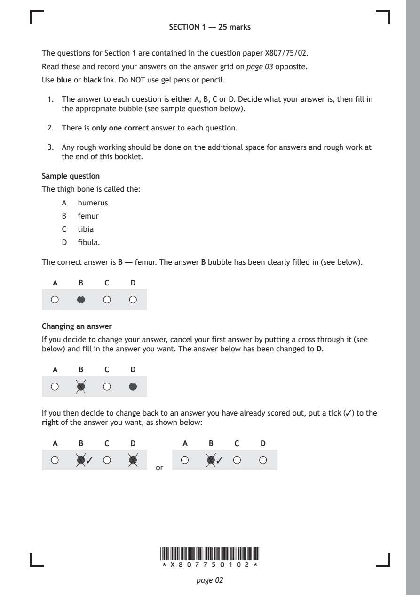
Selectable page text
SECTION 1 — 25 marks
The questions for Section 1 are contained in the question paper X807/75/02.
Read these and record your answers on the answer grid on page 03 opposite.
Use blue or black ink. Do NOT use gel pens or pencil.
1. The answer to each question is either A, B, C or D. Decide what your answer is, then fill in
the appropriate bubble (see sample question below).
2. There is only one correct answer to each question.
3. Any rough working should be done on the additional space for answers and rough work at
the end of this booklet.
Sample question
The thigh bone is called the:
A humerus
B femur
C tibia
D fibula.
The correct answer is B — femur. The answer B bubble has been clearly filled in (see below).
A B C D
Changing an answer
If you decide to change your answer, cancel your first answer by putting a cross through it (see
below) and fill in the answer you want. The answer below has been changed to D.
A B C D
If you then decide to change back to an answer you have already scored out, put a tick (3) to the
right of the answer you want, as shown below:
A B C D A B C D
or
*X807750102*
page 02PDF page 3

Selectable page text
SECTION 1 — Answer grid
*OBJ25AD1*
A B C D
1
2
3
4
5
6
7
8
9
10
11
12
13
14
15
16
17
18
19
20
21
22
23
24
25
*X807750103*
page 03 [Turn overPDF page 4

Selectable page text
[BLANK PAGE]
DO NOT WRITE ON THIS PAGE
*X807750104*
page 04PDF page 5
Paper 2, Question 1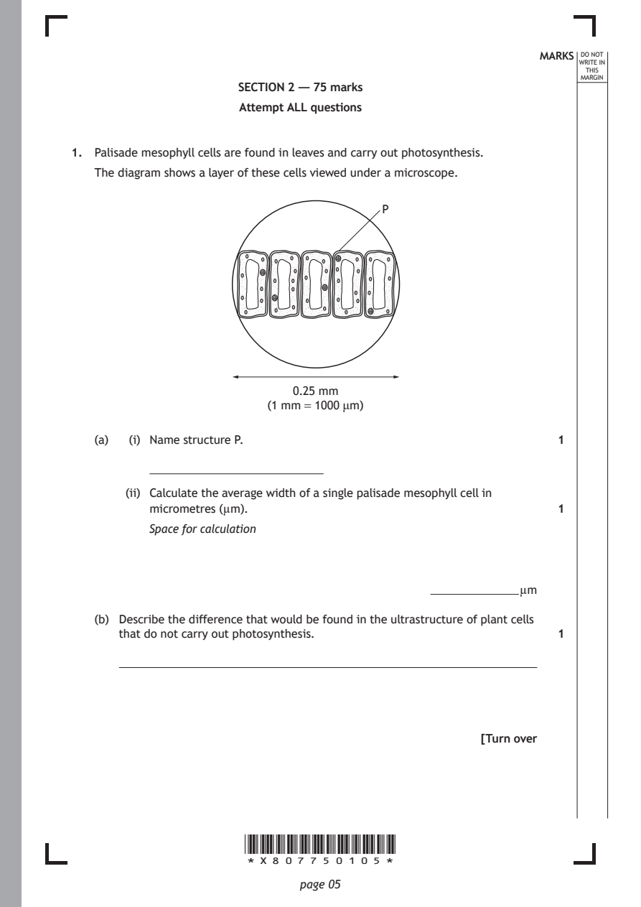
Selectable page text
MARKS _{W}^{D}_{R}^{O}_{I} _{T}^{N}OT
E IN
THIS
MARGIN
SECTION 2 — 75 marks
Attempt ALL questions
1. Palisade mesophyll cells are found in leaves and carry out photosynthesis.
The diagram shows a layer of these cells viewed under a microscope.
P
0.25 mm
(1 mm = 1000 μm)
(a) (i) Name structure P. 1
(ii) Calculate the average width of a single palisade mesophyll cell in
micrometres (µm). 1
Space for calculation
µm
(b) Describe the difference that would be found in the ultrastructure of plant cells
that do not carry out photosynthesis. 1
[Turn over
*X807750105*
page 05PDF page 6
Paper 2, Question 2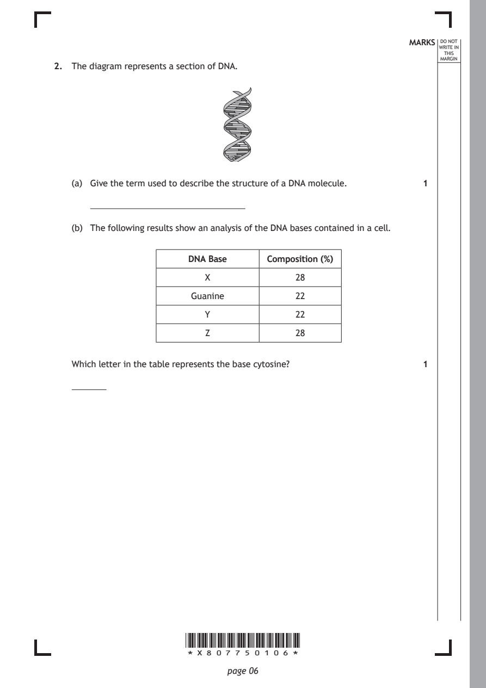
Selectable page text
MARKS _{W}^{D}_{R}^{O}_{I} _{T}^{N}OT
E IN
THIS
MARGIN
2. The diagram represents a section of DNA.
(a) Give the term used to describe the structure of a DNA molecule. 1
(b) The following results show an analysis of the DNA bases contained in a cell.
DNA Base Composition (%)
X 28
Guanine 22
Y 22
Z 28
Which letter in the table represents the base cytosine? 1
*X807750106*
page 06PDF page 7
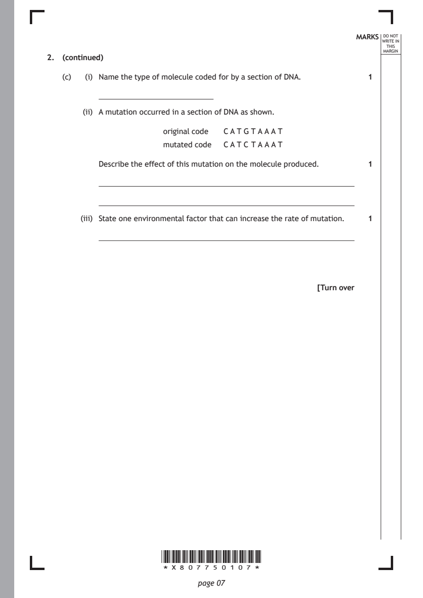
Selectable page text
MARKS _{W}^{D}_{R}^{O}_{I} _{T}^{N}OT
E IN
THIS
MARGIN
2. (continued)
(c) (i) Name the type of molecule coded for by a section of DNA. 1
(ii) A mutation occurred in a section of DNA as shown.
original code C A T G T A A A T
mutated code C A T C T A A A T
Describe the effect of this mutation on the molecule produced. 1
(iii) State one environmental factor that can increase the rate of mutation. 1
[Turn over
*X807750107*
page 07PDF page 8
Paper 2, Question 3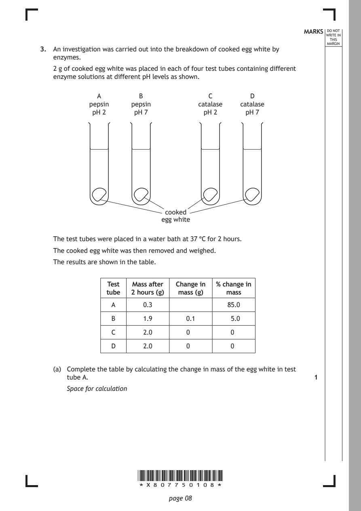
Selectable page text
MARKS _{W}^{D}_{R}^{O}_{I} _{T}^{N}OT
E IN
THIS
MARGIN
3. An investigation was carried out into the breakdown of cooked egg white by
enzymes.
2 g of cooked egg white was placed in each of four test tubes containing different
enzyme solutions at different pH levels as shown.
A B C D
pepsin pepsin catalase catalase
pH 2 pH 7 pH 2 pH 7
cooked
egg white
The test tubes were placed in a water bath at 37 °C for 2 hours.
The cooked egg white was then removed and weighed.
The results are shown in the table.
Test Mass after Change in % change in
tube 2 hours (g) mass (g) mass
A 0.3 85.0
B 1.9 0.1 5.0
C 2.0 0 0
D 2.0 0 0
(a) Complete the table by calculating the change in mass of the egg white in test
tube A. 1
Space for calculation
*X807750108*
page 08PDF page 9
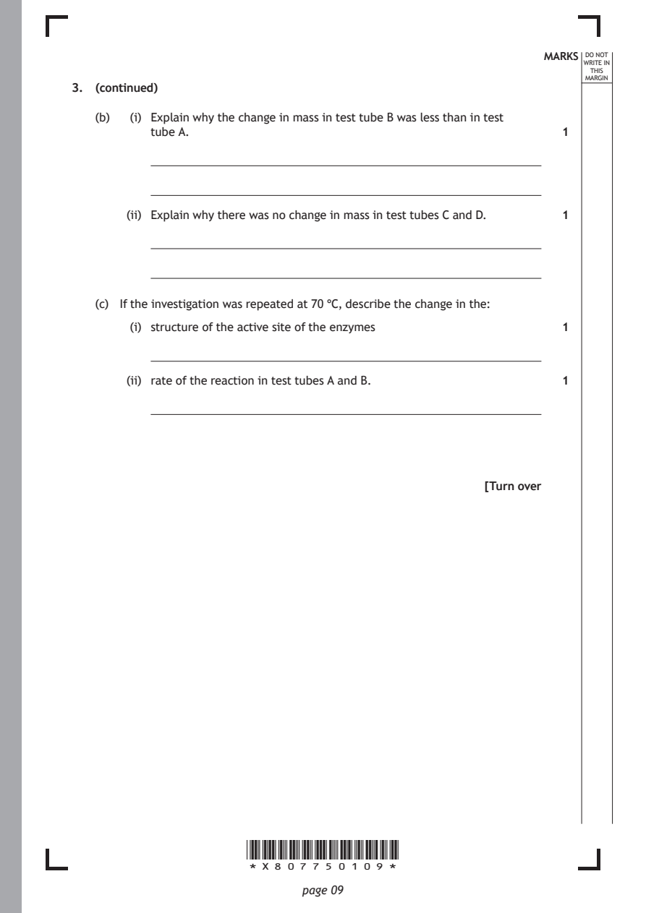
Selectable page text
MARKS _{W}^{D}_{R}^{O}_{I} _{T}^{N}OT
E IN
THIS
MARGIN
3. (continued)
(b) (i) Explain why the change in mass in test tube B was less than in test
tube A. 1
(ii) Explain why there was no change in mass in test tubes C and D. 1
(c) If the investigation was repeated at 70 °C, describe the change in the:
(i) structure of the active site of the enzymes 1
(ii) rate of the reaction in test tubes A and B. 1
[Turn over
*X807750109*
page 09PDF page 10
Paper 2, Question 4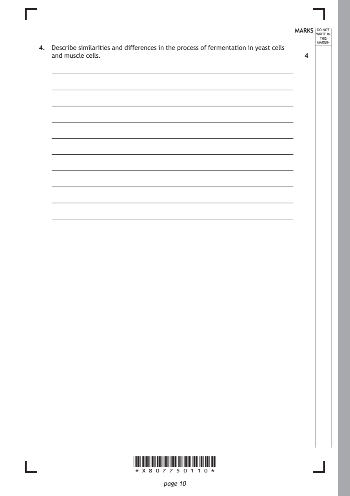
Selectable page text
MARKS _{W}^{D}_{R}^{O}_{I} _{T}^{N}OT
E IN
THIS
MARGIN
4. Describe similarities and differences in the process of fermentation in yeast cells
and muscle cells. 4
*X807750110*
page 10PDF page 11
Paper 2, Question 5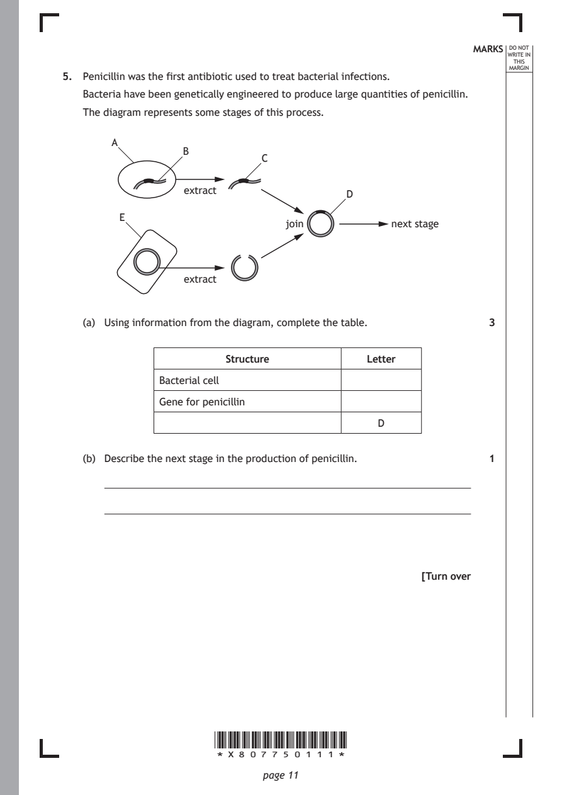
Selectable page text
MARKS _{W}^{D}_{R}^{O}_{I} _{T}^{N}OT
E IN
THIS
MARGIN
5. Penicillin was the first antibiotic used to treat bacterial infections.
Bacteria have been genetically engineered to produce large quantities of penicillin.
The diagram represents some stages of this process.
A
B
C
extract
D
E
join next stage
extract
(a) Using information from the diagram, complete the table. 3
Structure Letter
Bacterial cell
Gene for penicillin
D
(b) Describe the next stage in the production of penicillin. 1
[Turn over
*X807750111*
page 11PDF page 12
Paper 2, Question 6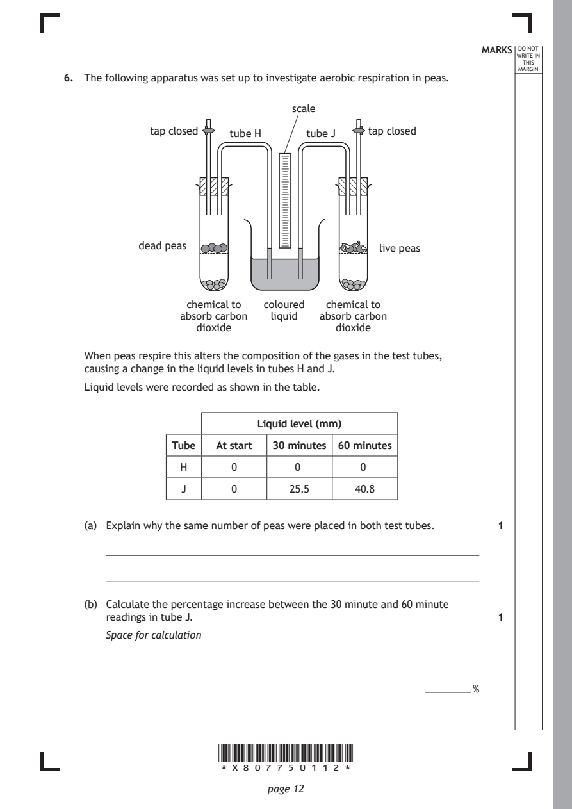
Selectable page text
MARKS _{W}^{D}_{R}^{O}_{I} _{T}^{N}OT
E IN
THIS
MARGIN
6. The following apparatus was set up to investigate aerobic respiration in peas.
scale
tap closed tube H tube J tap closed
dead peas live peas
chemical to coloured chemical to
absorb carbon liquid absorb carbon
dioxide dioxide
When peas respire this alters the composition of the gases in the test tubes,
causing a change in the liquid levels in tubes H and J.
Liquid levels were recorded as shown in the table.
Liquid level (mm)
Tube At start 30 minutes 60 minutes
H 0 0 0
J 0 25.5 40.8
(a) Explain why the same number of peas were placed in both test tubes. 1
(b) Calculate the percentage increase between the 30 minute and 60 minute
readings in tube J. 1
Space for calculation
%
*X807750112*
page 12PDF page 13
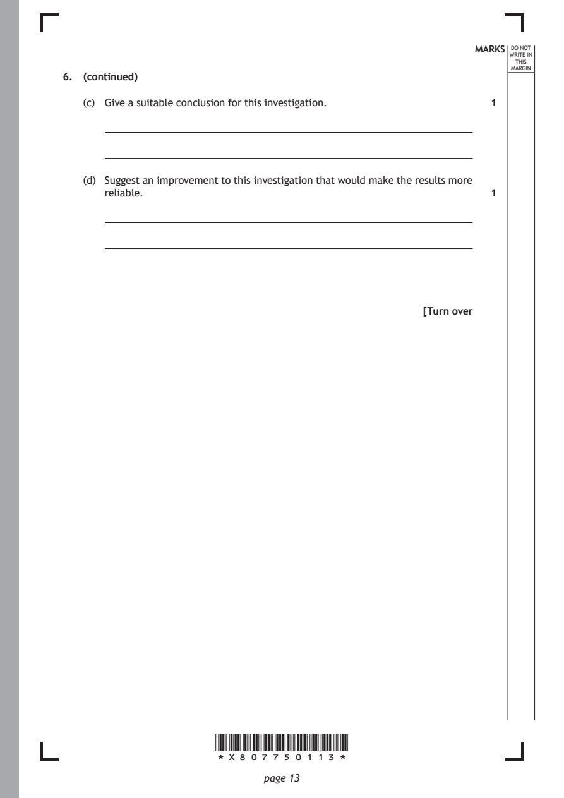
Selectable page text
MARKS _{W}^{D}_{R}^{O}_{I} _{T}^{N}OT
E IN
THIS
MARGIN
6. (continued)
(c) Give a suitable conclusion for this investigation. 1
(d) Suggest an improvement to this investigation that would make the results more
reliable. 1
[Turn over
*X807750113*
page 13PDF page 14
Paper 2, Question 7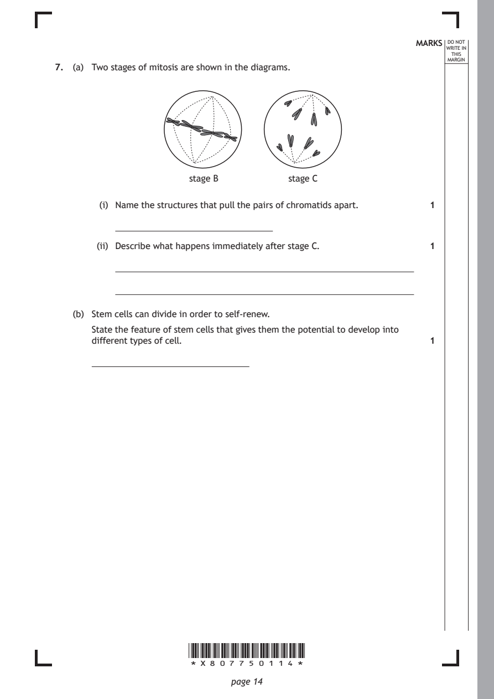
Selectable page text
MARKS _{W}^{D}_{R}^{O}_{I} _{T}^{N}OT
E IN
THIS
MARGIN
7. (a) Two stages of mitosis are shown in the diagrams.
stage B stage C
(i) Name the structures that pull the pairs of chromatids apart. 1
(ii) Describe what happens immediately after stage C. 1
(b) Stem cells can divide in order to self-renew.
State the feature of stem cells that gives them the potential to develop into
different types of cell. 1
*X807750114*
page 14PDF page 15
Paper 2, Question 8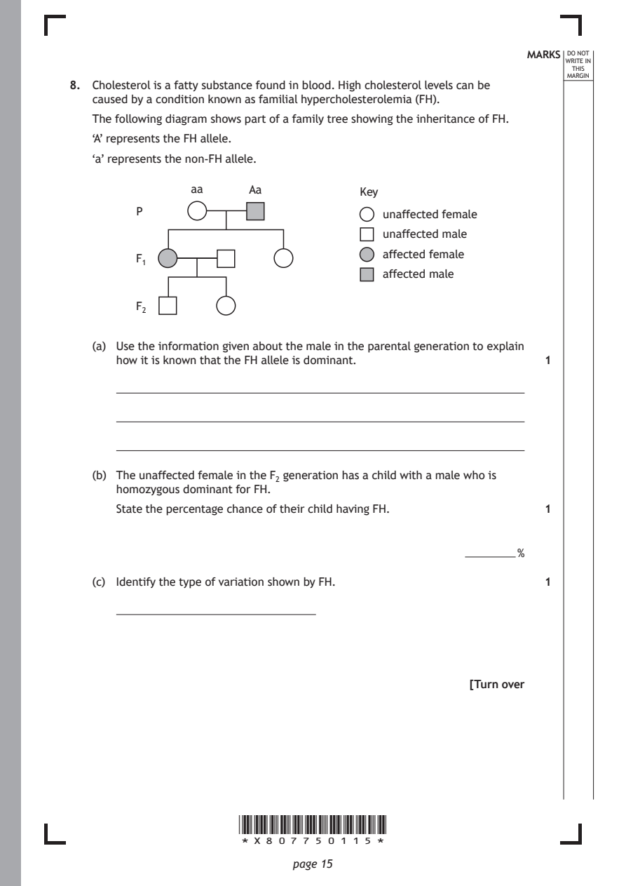
Selectable page text
MARKS _{W}^{D}_{R}^{O}_{I} _{T}^{N}OT
E IN
THIS
MARGIN
8. Cholesterol is a fatty substance found in blood. High cholesterol levels can be
caused by a condition known as familial hypercholesterolemia (FH).
The following diagram shows part of a family tree showing the inheritance of FH.
‘A’ represents the FH allele.
‘a’ represents the non-FH allele.
aa Aa Key
P unaffected female
unaffected male
affected female
F₁
affected male
F₂
(a) Use the information given about the male in the parental generation to explain
how it is known that the FH allele is dominant. 1
(b) The unaffected female in the F₂ generation has a child with a male who is
homozygous dominant for FH.
State the percentage chance of their child having FH. 1
%
(c) Identify the type of variation shown by FH. 1
[Turn over
*X807750115*
page 15PDF page 16
Paper 2, Question 9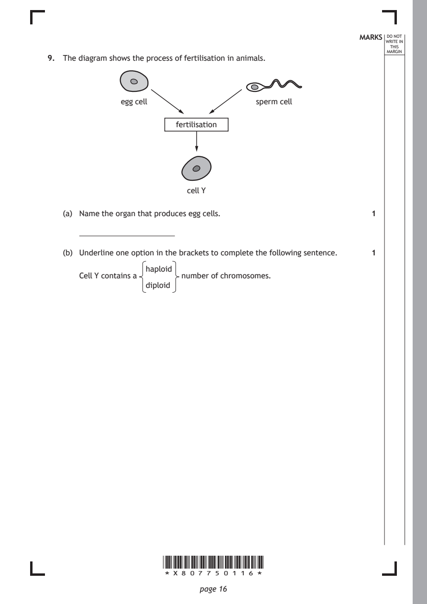
Selectable page text
MARKS _{W}^{D}_{R}^{O}_{I} _{T}^{N}OT
E IN
THIS
MARGIN
9. The diagram shows the process of fertilisation in animals.
egg cell sperm cell
fertilisation
cell Y
(a) Name the organ that produces egg cells. 1
(b) Underline one option in the brackets to complete the following sentence. 1
haploid
Cell Y contains a number of chromosomes.
diploid
*X807750116*
page 16PDF page 17
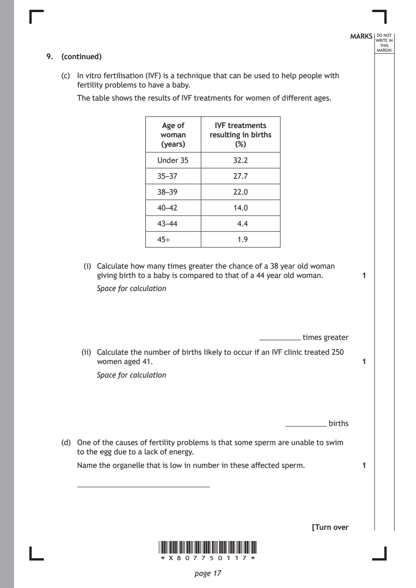
Selectable page text
MARKS _{W}^{D}_{R}^{O}_{I} _{T}^{N}OT
E IN
THIS
MARGIN
9. (continued)
(c) In vitro fertilisation (IVF) is a technique that can be used to help people with
fertility problems to have a baby.
The table shows the results of IVF treatments for women of different ages.
Age of IVF treatments
woman resulting in births
(years) (%)
Under 35 32.2
35–37 27.7
38–39 22.0
40–42 14.0
43–44 4.4
45+ 1.9
(i) Calculate how many times greater the chance of a 38 year old woman
giving birth to a baby is compared to that of a 44 year old woman. 1
Space for calculation
times greater
(ii) Calculate the number of births likely to occur if an IVF clinic treated 250
women aged 41. 1
Space for calculation
births
(d) One of the causes of fertility problems is that some sperm are unable to swim
to the egg due to a lack of energy.
Name the organelle that is low in number in these affected sperm. 1
[Turn over
*X807750117*
page 17PDF page 18
Paper 2, Question 10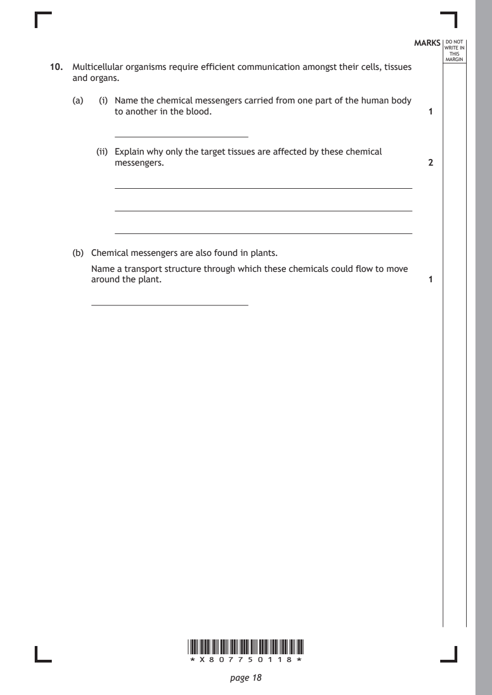
Selectable page text
MARKS _{W}^{D}_{R}^{O}_{I} _{T}^{N}OT
E IN
THIS
MARGIN
10. Multicellular organisms require efficient communication amongst their cells, tissues
and organs.
(a) (i) Name the chemical messengers carried from one part of the human body
to another in the blood. 1
(ii) Explain why only the target tissues are affected by these chemical
messengers. 2
(b) Chemical messengers are also found in plants.
Name a transport structure through which these chemicals could flow to move
around the plant. 1
*X807750118*
page 18PDF page 19
Paper 2, Question 11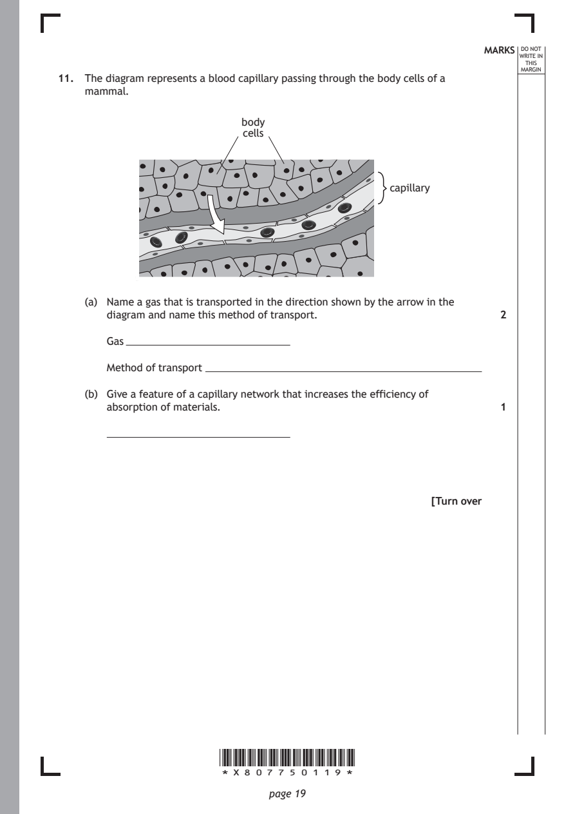
Selectable page text
MARKS _{W}^{D}_{R}^{O}_{I} _{T}^{N}OT
E IN
THIS
MARGIN
11. The diagram represents a blood capillary passing through the body cells of a
mammal.
body
cells
capillary
(a) Name a gas that is transported in the direction shown by the arrow in the
diagram and name this method of transport. 2
Gas
Method of transport
(b) Give a feature of a capillary network that increases the efficiency of
absorption of materials. 1
[Turn over
*X807750119*
page 19PDF page 20
Paper 2, Question 12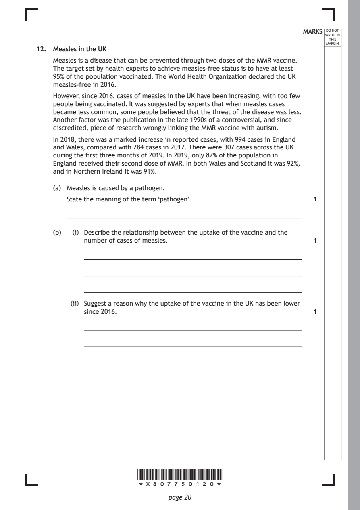
Selectable page text
MARKS _{W}^{D}_{R}^{O}_{I} _{T}^{N}OT
E IN
THIS
MARGIN
12. Measles in the UK
Measles is a disease that can be prevented through two doses of the MMR vaccine.
The target set by health experts to achieve measles-free status is to have at least
95% of the population vaccinated. The World Health Organization declared the UK
measles-free in 2016.
However, since 2016, cases of measles in the UK have been increasing, with too few
people being vaccinated. It was suggested by experts that when measles cases
became less common, some people believed that the threat of the disease was less.
Another factor was the publication in the late 1990s of a controversial, and since
discredited, piece of research wrongly linking the MMR vaccine with autism.
In 2018, there was a marked increase in reported cases, with 994 cases in England
and Wales, compared with 284 cases in 2017. There were 307 cases across the UK
during the first three months of 2019. In 2019, only 87% of the population in
England received their second dose of MMR. In both Wales and Scotland it was 92%,
and in Northern Ireland it was 91%.
(a) Measles is caused by a pathogen.
State the meaning of the term ‘pathogen’. 1
(b) (i) Describe the relationship between the uptake of the vaccine and the
number of cases of measles. 1
(ii) Suggest a reason why the uptake of the vaccine in the UK has been lower
since 2016. 1
*X807750120*
page 20PDF page 21
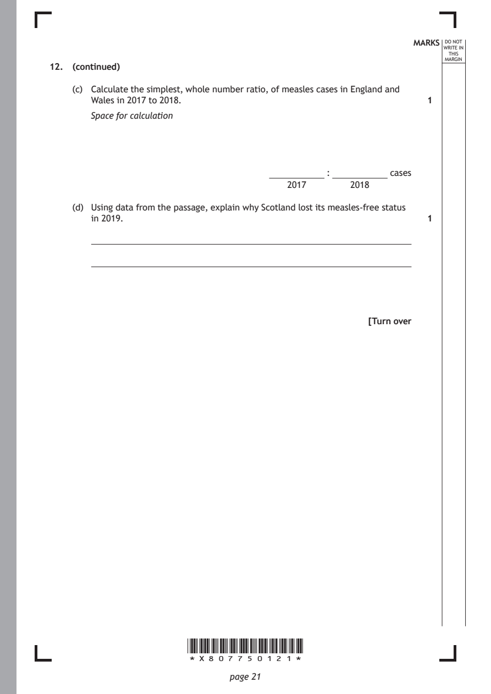
Selectable page text
MARKS _{W}^{D}_{R}^{O}_{I} _{T}^{N}OT
E IN
THIS
MARGIN
12. (continued)
(c) Calculate the simplest, whole number ratio, of measles cases in England and
Wales in 2017 to 2018. 1
Space for calculation
: cases
2017 2018
(d) Using data from the passage, explain why Scotland lost its measles-free status
in 2019. 1
[Turn over
*X807750121*
page 21PDF page 22
Paper 2, Question 13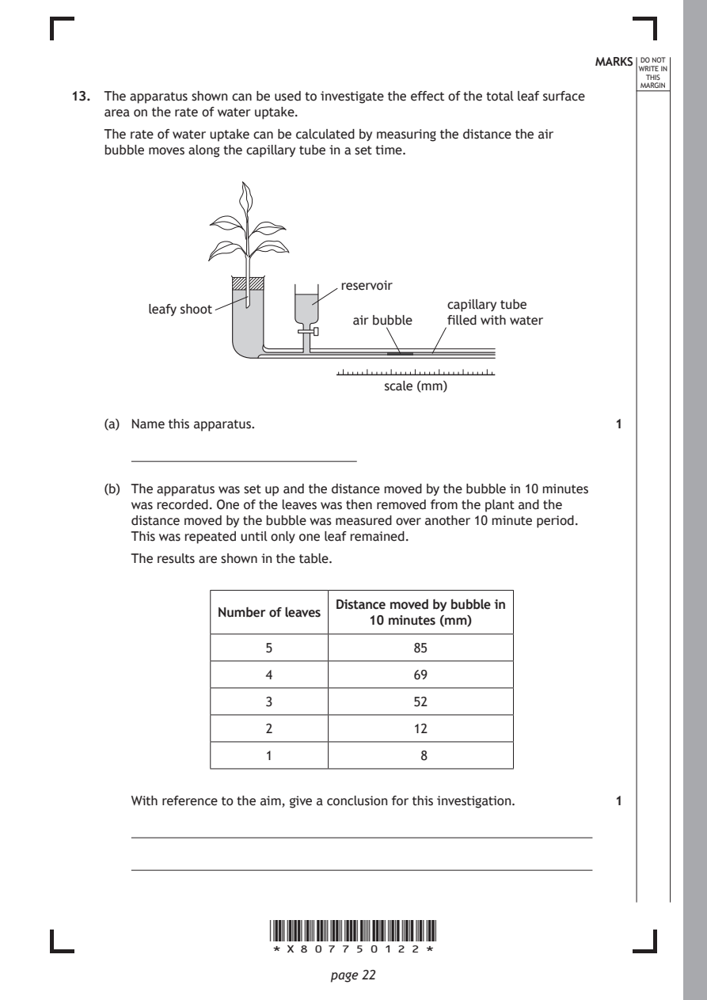
Selectable page text
MARKS _{W}^{D}_{R}^{O}_{I} _{T}^{N}OT
E IN
THIS
MARGIN
13. The apparatus shown can be used to investigate the effect of the total leaf surface
area on the rate of water uptake.
The rate of water uptake can be calculated by measuring the distance the air
bubble moves along the capillary tube in a set time.
reservoir
capillary tube
leafy shoot
air bubble filled with water
scale (mm)
(a) Name this apparatus. 1
(b) The apparatus was set up and the distance moved by the bubble in 10 minutes
was recorded. One of the leaves was then removed from the plant and the
distance moved by the bubble was measured over another 10 minute period.
This was repeated until only one leaf remained.
The results are shown in the table.
Distance moved by bubble in
Number of leaves
10 minutes (mm)
5 85
4 69
3 52
2 12
1 8
With reference to the aim, give a conclusion for this investigation. 1
*X807750122*
page 22PDF page 23
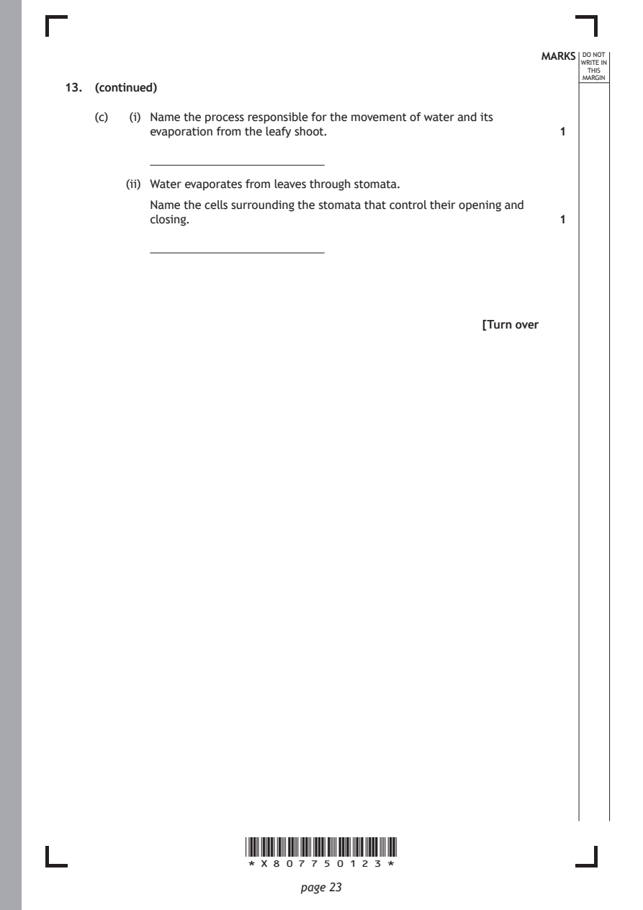
Selectable page text
MARKS _{W}^{D}_{R}^{O}_{I} _{T}^{N}OT
E IN
THIS
MARGIN
13. (continued)
(c) (i) Name the process responsible for the movement of water and its
evaporation from the leafy shoot. 1
(ii) Water evaporates from leaves through stomata.
Name the cells surrounding the stomata that control their opening and
closing. 1
[Turn over
*X807750123*
page 23PDF page 24
Paper 2, Question 14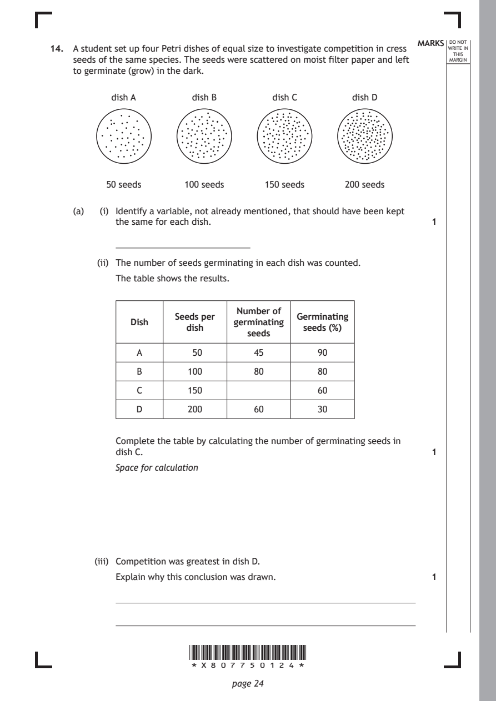
Selectable page text
MARKS _{W}^{D}_{R}^{O}_{I} _{T}^{N}OT
14. A student set up four Petri dishes of equal size to investigate competition in cress E IN
THIS
seeds of the same species. The seeds were scattered on moist filter paper and left MARGIN
to germinate (grow) in the dark.
dish A dish B dish C dish D
50 seeds 100 seeds 150 seeds 200 seeds
(a) (i) Identify a variable, not already mentioned, that should have been kept
the same for each dish. 1
(ii) The number of seeds germinating in each dish was counted.
The table shows the results.
Number of
Seeds per Germinating
Dish germinating
dish seeds (%)
seeds
A 50 45 90
B 100 80 80
C 150 60
D 200 60 30
Complete the table by calculating the number of germinating seeds in
dish C. 1
Space for calculation
(iii) Competition was greatest in dish D.
Explain why this conclusion was drawn. 1
*X807750124*
page 24PDF page 25
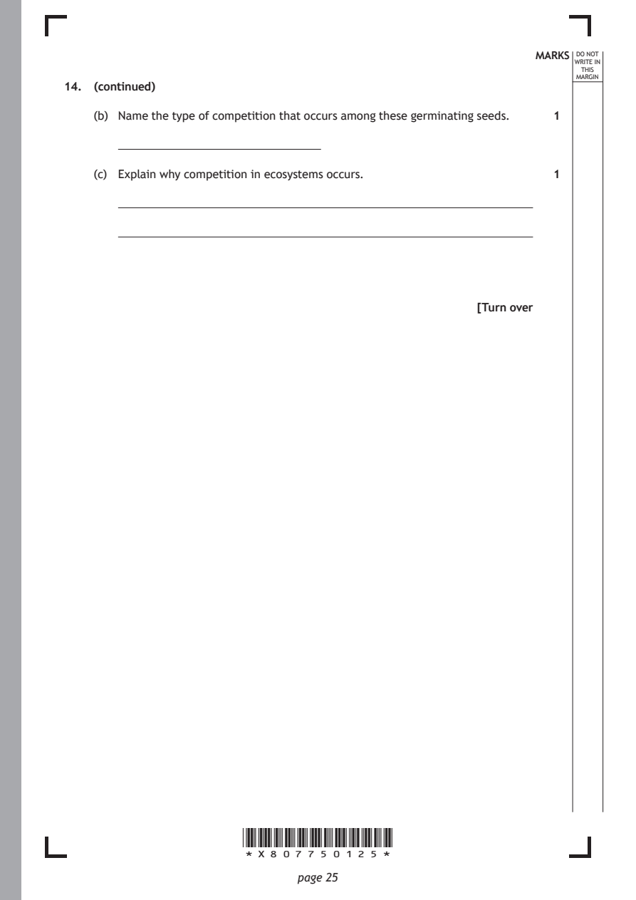
Selectable page text
MARKS _{W}^{D}_{R}^{O}_{I} _{T}^{N}OT
E IN
THIS
MARGIN
14. (continued)
(b) Name the type of competition that occurs among these germinating seeds. 1
(c) Explain why competition in ecosystems occurs. 1
[Turn over
*X807750125*
page 25PDF page 26
Paper 2, Question 15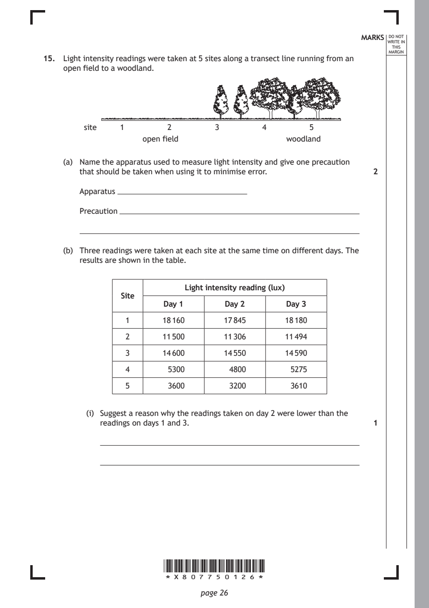
Selectable page text
MARKS _{W}^{D}_{R}^{O}_{I} _{T}^{N}OT
E IN
THIS
MARGIN
15. Light intensity readings were taken at 5 sites along a transect line running from an
open field to a woodland.
site 1 2 3 4 5
open field woodland
(a) Name the apparatus used to measure light intensity and give one precaution
that should be taken when using it to minimise error. 2
Apparatus
Precaution
(b) Three readings were taken at each site at the same time on different days. The
results are shown in the table.
Light intensity reading (lux)
Site
Day 1 Day 2 Day 3
1 18 160 17 845 18 180
2 11 500 11 306 11 494
3 14 600 14 550 14 590
4 5300 4800 5275
5 3600 3200 3610
(i) Suggest a reason why the readings taken on day 2 were lower than the
readings on days 1 and 3. 1
*X807750126*
page 26PDF page 27
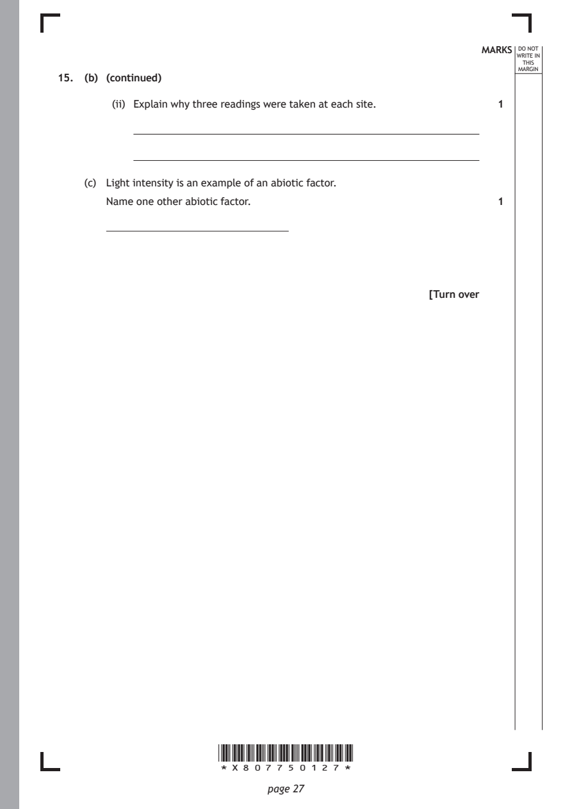
Selectable page text
MARKS _{W}^{D}_{R}^{O}_{I} _{T}^{N}OT
E IN
THIS
MARGIN
15. (b) (continued)
(ii) Explain why three readings were taken at each site. 1
(c) Light intensity is an example of an abiotic factor.
Name one other abiotic factor. 1
[Turn over
*X807750127*
page 27PDF page 28
Paper 2, Question 16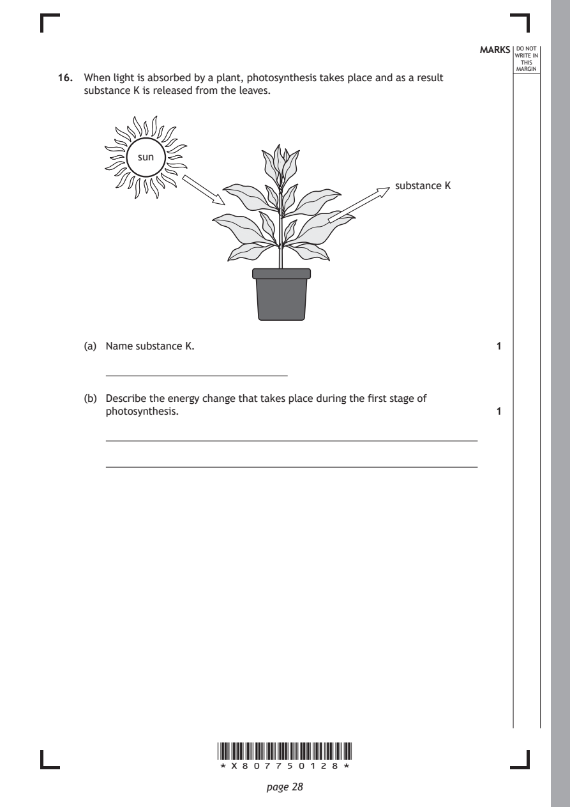
Selectable page text
MARKS _{W}^{D}_{R}^{O}_{I} _{T}^{N}OT
E IN
THIS
MARGIN
16. When light is absorbed by a plant, photosynthesis takes place and as a result
substance K is released from the leaves.
sun
substance K
(a) Name substance K. 1
(b) Describe the energy change that takes place during the first stage of
photosynthesis. 1
*X807750128*
page 28PDF page 29
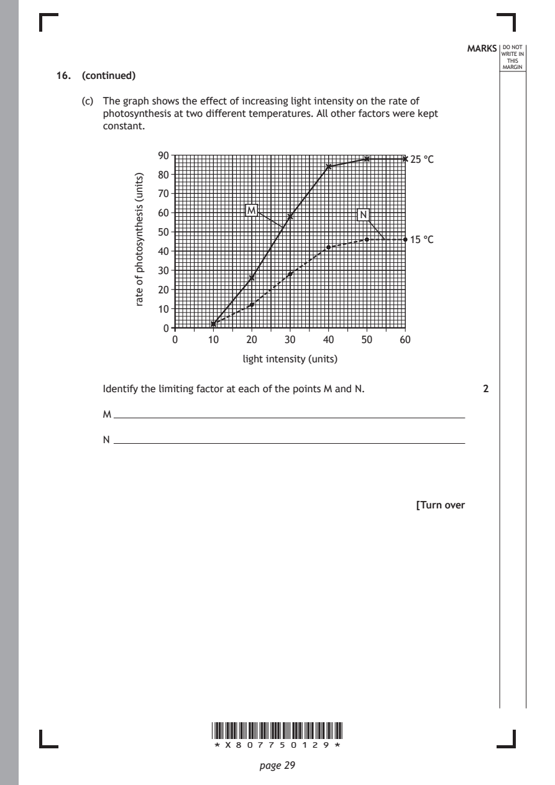
Selectable page text
MARKS _{W}^{D}_{R}^{O}_{I} _{T}^{N}OT
E IN
THIS
MARGIN
16. (continued)
(c) The graph shows the effect of increasing light intensity on the rate of
photosynthesis at two different temperatures. All other factors were kept
constant.
90
25 °C
80
70
M
60 N
50
15 °C
40
30
20
10
0
0 10 20 30 40 50 60
light intensity (units)
*X807750129*
page 29
)stinu(
sisehtnysotohp
fo
etar
Identify the limiting factor at each of the points M and N. 2
M
N
[Turn overPDF page 30
Paper 2, Question 17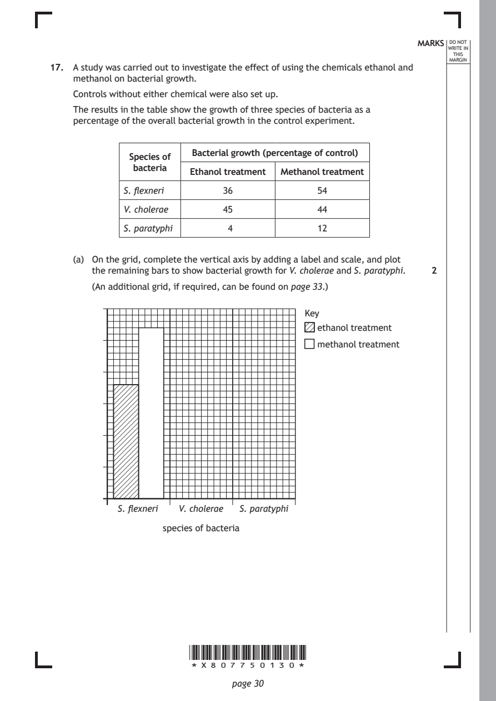
Selectable page text
MARKS _{W}^{D}_{R}^{O}_{I} _{T}^{N}OT
E IN
THIS
MARGIN
17. A study was carried out to investigate the effect of using the chemicals ethanol and
methanol on bacterial growth.
Controls without either chemical were also set up.
The results in the table show the growth of three species of bacteria as a
percentage of the overall bacterial growth in the control experiment.
Bacterial growth (percentage of control)
Species of
bacteria
Ethanol treatment Methanol treatment
S. flexneri 36 54
V. cholerae 45 44
S. paratyphi 4 12
(a) On the grid, complete the vertical axis by adding a label and scale, and plot
the remaining bars to show bacterial growth for V. cholerae and S. paratyphi. 2
(An additional grid, if required, can be found on page 33.)
Key
ethanol treatment
methanol treatment
S. flexneri V. cholerae S. paratyphi
species of bacteria
*X807750130*
page 30PDF page 31
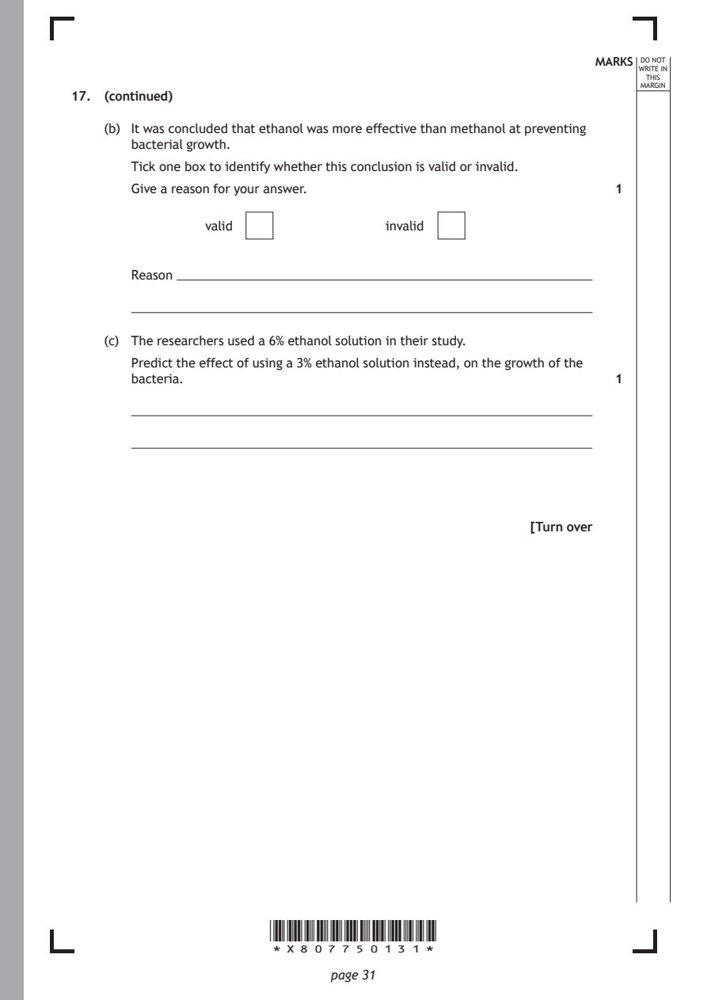
Selectable page text
MARKS _{W}^{D}_{R}^{O}_{I} _{T}^{N}OT
E IN
THIS
MARGIN
17. (continued)
(b) It was concluded that ethanol was more effective than methanol at preventing
bacterial growth.
Tick one box to identify whether this conclusion is valid or invalid.
Give a reason for your answer. 1
valid invalid
Reason
(c) The researchers used a 6% ethanol solution in their study.
Predict the effect of using a 3% ethanol solution instead, on the growth of the
bacteria. 1
[Turn over
*X807750131*
page 31PDF page 32
Paper 2, Question 18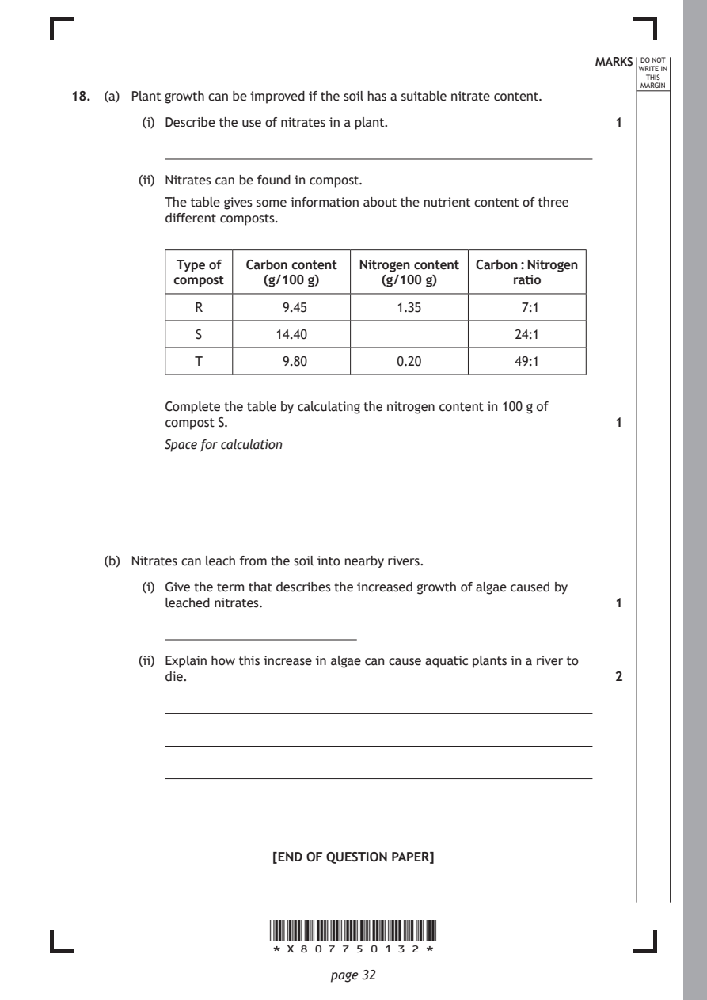
Selectable page text
MARKS _{W}^{D}_{R}^{O}_{I} _{T}^{N}OT
E IN
THIS
MARGIN
18. (a) Plant growth can be improved if the soil has a suitable nitrate content.
(i) Describe the use of nitrates in a plant. 1
(ii) Nitrates can be found in compost.
The table gives some information about the nutrient content of three
different composts.
Type of Carbon content Nitrogen content Carbon : Nitrogen
compost (g/100 g) (g/100 g) ratio
R 9.45 1.35 7:1
S 14.40 24:1
T 9.80 0.20 49:1
Complete the table by calculating the nitrogen content in 100 g of
compost S. 1
Space for calculation
(b) Nitrates can leach from the soil into nearby rivers.
(i) Give the term that describes the increased growth of algae caused by
leached nitrates. 1
(ii) Explain how this increase in algae can cause aquatic plants in a river to
die. 2
[END OF QUESTION PAPER]
*X807750132*
page 32PDF page 33
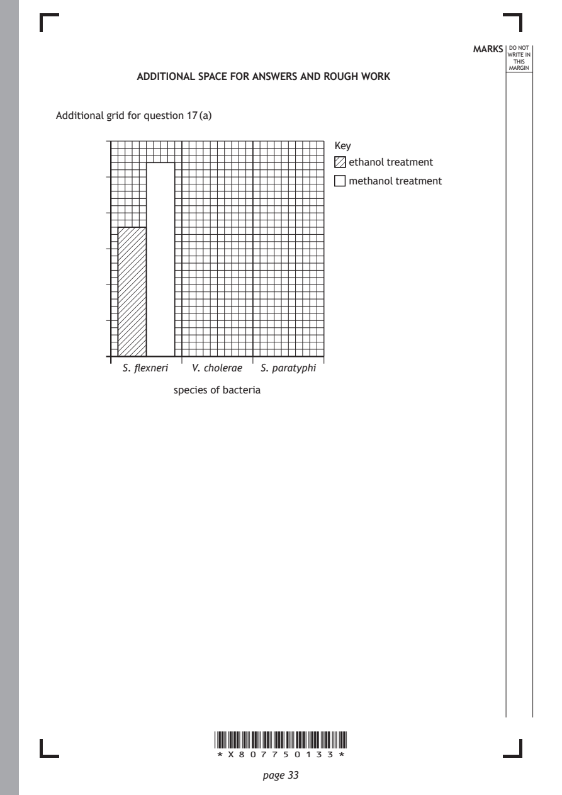
Selectable page text
MARKS _{W}^{D}_{R}^{O}_{I} _{T}^{N}OT
E IN
THIS
MARGIN
ADDITIONAL SPACE FOR ANSWERS AND ROUGH WORK
Additional grid for question 17 (a)
Key
ethanol treatment
methanol treatment
S. flexneri V. cholerae S. paratyphi
species of bacteria
*X807750133*
page 33PDF page 34
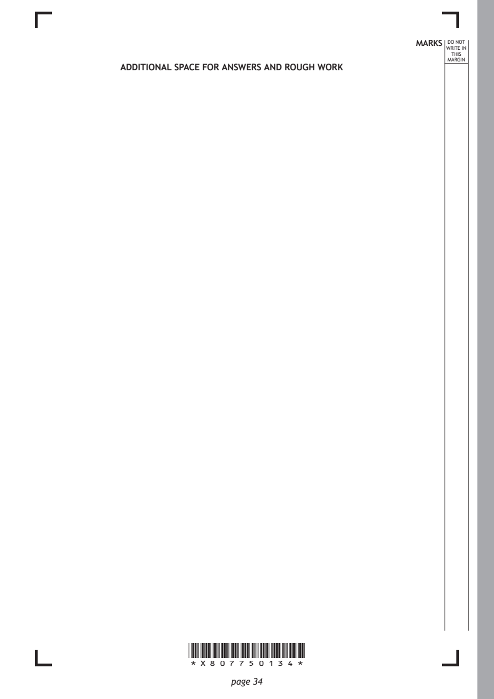
Selectable page text
MARKS _{W}^{D}_{R}^{O}_{I} _{T}^{N}OT
E IN
THIS
MARGIN
ADDITIONAL SPACE FOR ANSWERS AND ROUGH WORK
*X807750134*
page 34PDF page 35
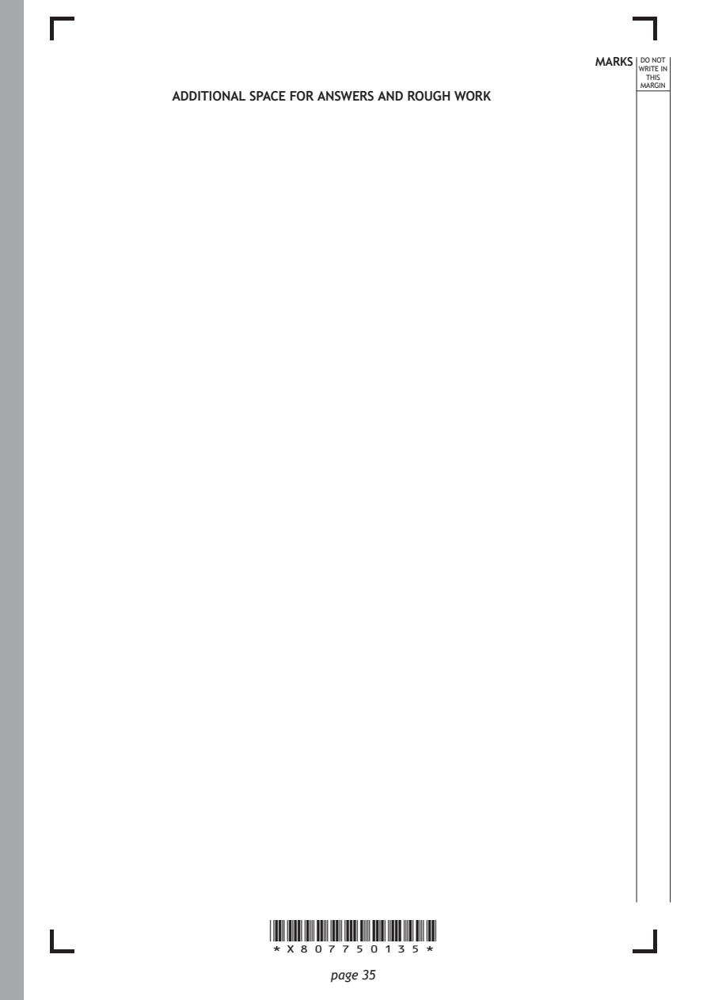
Selectable page text
MARKS _{W}^{D}_{R}^{O}_{I} _{T}^{N}OT
E IN
THIS
MARGIN
ADDITIONAL SPACE FOR ANSWERS AND ROUGH WORK
*X807750135*
page 35PDF page 36
Selectable page text
[BLANK PAGE]
DO NOT WRITE ON THIS PAGE
*X807750136*
page 36